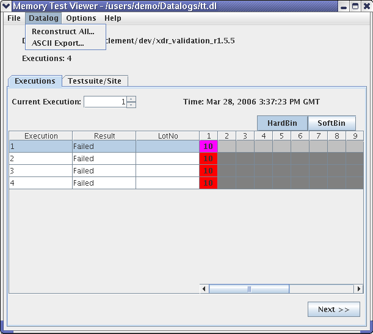
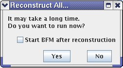
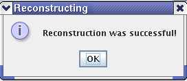

Reconstruct all
To reconstruct all data in the data log for the selected device use the Datalog menu item in the Memory Test Viewer window (see following figure).
- From the Datalog menu, choose Reconstruct All.

- A dialog allows you to postpone running reconstruction and lets you decide whether to start
BFM after reconstruction or not.

- Click Yes and a progress window opens. You may cancel the reconstruction process by clicking Cancel in that window. Click No to refrain from running the reconstruction.
When the reconstruction process has finished successfully the progress window closes and the Reconstructing message box opens.

Click OK to close the window.